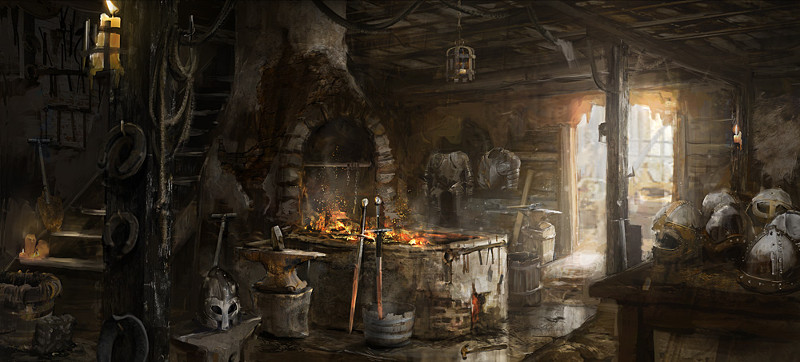

Métiers
Laelith, comme toute grande ville, regorge d'artisans et de professionnels de tous types, indépendants ou affiliés à une guilde. Vous trouverez ci-dessous une liste de professions représentées à Laelith, classées par ordre alphabétique, qui sont autant de PNJ que des aventuriers pourraient rencontrer. La plupart travaillent six jours par semaine et se reposent le dernier jour de la semaine et les jours fériés. Le travail suit le rythme du soleil. On commence donc un peu après qu'il se soit levé et on arrête un peu avant qu'il ne se couche, ce qui fait que les journées n'ont pas toutes la même longueur suivant les saisons.
| Métier | Description |
| Apothicaire | Il a un peu le rôle de pharmacien en ville, car il connaît les plantes et leurs effets bénéfiques. Un apothicaire est toujours à la recherche de nouvelles plantes et de nouvelles formules. |
| Architecte | Bâtir de grands et imposants bâtiments, comme les temples et le théâtre, ou bien plus modestement des hôtels particuliers, requiert des compétences particulières. Les architectes sont tout à la fois chef de projet, ingénieur et artiste. Ils sont généralement curieux de connaître de nouveau style et de nouveaux matériaux de construction. Le père Lebrethon est un architecte à la retraite. |
| Armurier | L'armurier est un forgeron spécialisé qui fabrique des armes et des armures. |
| Aubergiste | Une auberge est un établissement qui propose des chambres contre paiement. L'auberge Lebrethon en est un exemple. |
| Barbier | Expert du rasoir, c'est celui qui entretient les cheveux, la barbe et la moustache. |
| Bibliothécaire | Les librairies n'existant pas, c'est donc dans les bibliothèques que l'on vend les livres, qui sont encore tous recopiés à la main, donc chers. Et si l'on ajoute à cela qu'une grande partie de la population ne sait pas lire, on comprend pourquoi les bibliothèques sont des endroits exclusifs réservés aux nantis. Le gnome Yquem est un des bibliothécaires de la bibliothèque de la Foi. |
| Bijoutier | Le bijoutier vend et fabrique des bijoux à base de pierres précieuses et de métaux précieux comme l'or ou la platine. |
| Boucher | Il travaille et vend le mouton (d'Azilian), le porc (d'Egonzasthan), le bœuf et le veau (d'Agramor). |
| Boulanger | Le boulanger fabrique et vend du pain, qu'il fait cuir dans un four. C'est un élément essentiel de l'alimentation à Laelith. |
| Bourrelier/Sellier | Cet artisan fabrique les harnais des chevaux et des bêtes de somme et/ou des selles. |
| Boursier/Gantier | Il travaille le cuir pour fabriquer principalement des bourses, des sacs et/ou des gants. |
| Brasseur | C'est celui qui fait la bière et qui la livre aux établissements où elle sera consommée, comme les auberges et les tavernes. Un brasseur est toujours à la recherche du meilleur breuvage, celui qui lui donnera un avantage sur la concurrence. |
| Cartographe | Les cartographes sont des passionnés qui tentent de retranscrire sur une carte la géographie des royaumes. Le prix d'une carte peut être exorbitant. |
| Chandelier | Si dans les villages et les petites villes brûlent de simples torches, dans de grandes villes comme Laelith ce sont des bougies et de l'huile qui éclairent les rues de nuit. Le chandelier est l'artisan qui alimente la ville en stock de bougies et en barils d'huile. |
| Charbonnier | Le charbonnier est celui qui produit le charbon, en faisant brûler lentement du bois dans des fosses situées hors de la ville, puis le livre à ses clients en ville, particuliers ou professionnels, comme les bains publics, qui s'en servent pour le chauffage. Il sent souvent la fumée et le bois brûlé. Gras-Double est un charbonnier situé sur la Chaussée du lac. |
| Charpentier | Ce terme recouvre tous les artisans qui travaille le bois pour la construction, les charpentes, les échafaudages, les grues, les roues, etc. |
| Comptable | La forte activité économique de Laelith rend nécessaire la gestion des investissements, des prêts et des taxes. Le travail du comptable est de garder des traces écrites de tous ces mouvements. Il se déplace fréquemment avec ses livres de comptes sous le bras. Caldis « le pointilleux » est comptable à la Haute Guilde. |
| Cordier | Le cordier fabrique des cordes et des cordages, en chanvre et en soie principalement. À Laelith, les marins sont ses principaux clients. |
| Cordonnier | Marcher est une occupation plus que courante, la qualité des chausses est donc primordiale pour le voyageur comme pour l'aventurier ou le pèlerin. |
| Coursier/Messager | On les appelle pour livrer une lettre ou un colis à quelqu'un. En général ils n'effectuent qu'une seule course à la fois, ils ne font pas de tournée. Les coursiers sont des gens toujours pressés. |
| Coutelier | C'est l'artisan qui fabrique les couteaux, de la lame jusqu'au manche, pour un usage domestique. |
| Crieur | Celui qui veut diffuser une nouvelle en ville fera appel à un crieur, qui parcoure les rues en déclamant le message. Cela peut être pour annoncer une fête, l'ouverture d'un nouveau commerce, ou bien même une annonce de recrutement. |
| Forgeron | Il travaille le fer pour fabriquer des cercles pour le tonnelier, des fers à chevaux, des outils, des enseignes, etc. Les nains sont réputés pour être d'excellents forgerons. |
| Fourreur | Cet artisan fabrique et répare des pièces en fourrure. C'est un grand acheteur de toutes sortes de peaux. |
| Joueur professionnel | Une personne intelligente et/ou qui sait tricher peut faire du jeu sa profession. Ces hommes-là alternent toutefois souvent entre l'état « complètement fauché » et celui de « riche à ne plus pouvoir ». On les trouve généralement le soir dans les nombreuses salles de jeux de la Chaussée du lac, ou dans l'établissement le plus côté de la ville : la maison des Mille fleurs. |
| Maçon | Cet ouvrier monte les murs et les cimente, pour la construction des habitations. Vu le relief particulier de Laelith, c'est un métier à risque. |
| Marchand | Parmi tous les types de marchands qu'on peut rencontrer à Laelith, citons ceux qui vendent des épices ou des vins fins. |
| Menuisier | Le menuisier travaille le bois et fabrique des portes, des meubles, des sièges, etc. |
| Papetier | Une cité comme Laelith requiert fréquemment, ne serait-ce que pour son administration, de rédiger des rapports ou bien encore d'enregistrer des actes. Cet artisan fabrique donc le papier, les parchemins et les morceaux de vélin que les nombreux scribes, prêtres, magiciens, gardes ou autres comptables nécessiteront. Ses matières premières sont le coton, le chanvre et le lin. |
| Pêcheur | Les deux lacs regorgent de nombreuses espèces de poissons, qui servent de base à l'alimentation de la population du royaume. |
| Peintre | Les peintures sont faites à base d'huiles ou de produits agricoles comme le lait ou les jaunes d’œufs. Sans aide magique ou secret d'alchimie, elles s'estompent rapidement. Il y a donc en ville toujours un bâtiment qui a besoin des services d'un peintre. |
| Poissonnier | Prépare et vend les poissons pêchés dans les deux lacs. C'est une nourriture de base à Laelith, car la viande, importée, y est chère. |
| Porteur d'eau | C'est celui qui apporte l’eau à domicile. Et de par le relief de Laelith, c'est un rude métier. |
| Potier | Le potier fabrique toutes sortes de récipients en terre cuite. |
| Ramoneur | Ce sont généralement de jeunes garçons qui peuvent entrer sans trop de difficultés dans des conduits de cheminées étroits. C'est un travail très important, car une cheminée non entretenue a de grandes chances de déclencher un incendie. Pourtant, crasseux, les ramoneurs sont souvent mal reçus dans de nombreux établissements de la ville. |
| Relieur | Les relieurs fabriquent des livres à partir de feuilles, vierges ou non, principalement pour les clercs et les magiciens. |
| Rémouleur | Artisan ambulant, le rémouleur est celui qui affûte les ustensiles coupants et tranchants, mais aussi les dagues et les épées sur une petite meule. |
| Scribe | Dans une société où nombre de personnes sont illettrées, savoir lire ou écrire permet souvent d'obtenir un bon travail. Certains scribes sont secrétaires particuliers de notables, d'autres se font payer au coup par coup pour recopier ou traduire un document, mais la majorité d'entre eux travaille dans un des temples de la cité. |
| Serrurier | C'est l'artisan qui fabriquer des clefs et des serrures. Il les répare également. Les serruriers sont tous affiliés à la guilde du même nom, et surveillés du coin de l’œil par les autorités. Toute personne exerçant cette activité sans être membre de la guilde est automatiquement considérée comme un voleur. |
| Souffleur de verre | Il fabrique des objets en verre, à l'aide d'une canne dans laquelle on souffle pour donner forme aux objets. |
| Tailleur de pierre | Cet ouvrier réalise des éléments architecturaux en pierre de taille comme des murs, voûtes, piliers, colonnes, cheminées, escaliers, etc. |
| Tapissier | Le tapissier fabrique des tapisseries et des tapis pour le confort et à la décoration des intérieurs. |
| Tanneur | Cet artisan travaille les peaux d'animaux (de bœuf, mouton, chèvre, cochon et même ookhab) pour produire du cuir. |
| Tavernier | Une taverne est un lieu où l'on peut boire du vin et de la bière, et souvent aussi manger. |
| Terrassier | Quelqu'un en ville doit bien se charger de nettoyer caniveaux et égouts, et d'enlever les tas d'ordures. C'est le travail de ces pauvres gens que sont les terrassiers, qui évacuent les ordures hors de la ville. Parfois avec la chance de tomber sur un trésor inespéré. |
| Tisserand | Il fabrique des tissus à l'aide d’un métier à tisser. Ses matières premières sont le coton, la laine, le lin, le chanvre et la soie. |
| Tonnelier | C'est l'artisan qui confectionne des tonneaux pour y stocker du vin ou de la bière. |
| Usurier/Prêteur sur gages | Lorsque l'on a besoin d'argent à Laelith, on va voir un usurier, qui prête de l'argent à un taux d'intérêt élevé. Cela peut prendre la forme d'une reconnaissance de dettes ou bien en laissant comme garantie un objet de valeur. |
| Veilleur de nuit | À la tombée du jour, le veilleur allume les lampes et les bougies des artères principales. Ensuite, durant la nuit, il continue d'arpenter la ville afin de s'assurer qu'aucune ne manque d'huile. Ce sont souvent eux qui appellent la garde s'ils détectent quelque chose d'anormal. |
L'apprentissage
Au sein d'un métier, on doit parcourir plusieurs étapes avant de devenir maître et pouvoir posséder sa propre boutique. La plupart des corporations définissent la composition des « métiers » en trois catégories : les maîtres, les compagnons et les apprentis.
On est d'abord apprenti pendant deux ou trois ans (dix chez les nains). Durant cette période, on est formé, nourri et logé par son maître, mais on n'est pas payé. On devient ensuite compagnon, et on perçoit alors un salaire. Pour devenir maître, il faut payer une taxe à la guilde et être accepté par les autres membres de celle-ci, généralement en faisant preuve de sa compétence technique.

Écrit par blueace